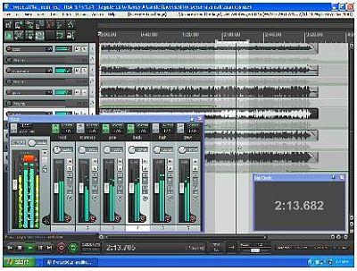

Select your area of interest:
Home* Lap Steel* 3 String Guitar* "Regular" Guitar* Violin* Bass*Banjo* Mandolin* Ukulele* Home Recording* Links
Simple "Homestyle" Recording
Here's a quick collection of tips, techniques, and ideas for the home and/or small project studio based on my long-term love with home recording. There are many websites that have great information available, but often what is needed is simple, quick, and concise answers. My intention is to provide those quick answers and share a bit of what I've learned over that 50 years. My personal involvement with recording covers a lot of ground, ranging from quick MP3 recordings for posting at forums to mobile recording of commercially distributed CDs. I'll show you how I do it...How to stir up a monster passion that's 50 years old and counting:

For those that are unfamiliar with exactly what you're looking at, it's a circa early 60's 3 inch reel to reel tape recorder. These recorders were produced prolifically after the advent of the transistor and could be purchased for around $10 at any of the stores that handled the first import electronics. The Japanese were looking for any excuse to convert the new component to a profitable product, and the tape recorder was one of the first to benefit from the miniaturization process that resulted from no longer needing power hungry vacuum tubes to amplify signal to usable proportions.
I actually had a couple of these recorders when I was a pre-teen, and the technology fascinated me. I quickly figured out how they worked and I would often remove the cover so I could hold back the mechanically actuated magnet used to erase previously recorded material to produce my first very crude "sound on sound" overdubbed recordings. It would baffle my parents how I could emerge from my bedroom with a tape recording of a literal crowd of kids on the tape when I would play it back for them. Needless to say, I was hooked!
Over the ensuing fifty-plus years I've been through several permutations of recording methods, but what I'll attempt to do here is offer a few suggestions of simple recording methods based on currently available technology and to give a bit of an overview of where it’s all taken me. I've made a very concerted effort to minimize the amount of money and time that I've devoted to it, as it can quickly turn into an uncontrollable monster if you give it the opportunity. I've always desired to temper my efforts to leave time for making instruments and playing music, which will always trump my fascination with recording.
The capabilities of simple recording devices rise as the price falls on a sometimes daily basis and I can tell you that there are great products available at the consumer level that would have been unimaginable a few short years ago. A bit later I’ll take you on a bit of a tour starting with some of the simpler recording devices and progress onward in the realm of microphones, monitors, and techniques.
I use a few different devices depending on what I wish to accomplish. I might use a simple handheld recorder if I’m looking to record a bit of a tune at a jam so I can remember it, but I’ll use different equipment if I’m going to do a live recording at another location with the idea of mixing the resultant audio in my home studio, possibly involving overdubs, for commercial release.
The Preliminary Techy Stuff (Yawn...)
Before going into an overview of the processes of basic home and field recording it will be very beneficial to understand a bit about exactly what digital audio is. You COULD skip past all of this, but if you take the time to understand the science behind it you’re going to more easily understand both your equipment choices and the reasoning behind why your choices work as a “system”. You can spend large amounts on gear, but if you don’t understand sample rate and bit depth, and audio formats it’s not going to be nearly as easy to get quality results from whatever you choose to purchase. Buckle up bucko, here we go.The A to Zs of A to D
Converting electrical energy to a form that can be stored as a digital file is done in a process known as analog to digital conversion; hereafter referred to as A/D conversion. To understand the conversion process we'll need to know what sample rate and bit depth are.Understanding Sample Rate and Bit Depth
I was initially going to pen a complete explanation of exactly how and why binary logic and the base 2 number system became the standard behind modern digital recording, but then I came to my senses with the realization that all anyone really wants is a simple explanation of what sample rate and bit depth are and a simple reason why they should care. First, sample rate and bit depth go hand in hand when an analog sound is converted into a digital representation (a series of numeric values) that can be stored as a computer file. To understand what these numbers represent we’ll follow a simplified example of the process of converting an analog sound to a digital recording.
The Sound Source
A source of sound (guitar, voice, whatever…) creates an actual sound wave in the air. A sound wave is produced by the source creating a series of pressure gradients in the surrounding air. The waves are exactly the same as those created on a pond surface when an object is thrown into it, although in air these waves obviously can’t be seen. The rock into pond example is an excellent way to visualize exactly what’s going on when sound is created, though.
The sound wave produced by the source next falls on a conversion device, usually in the form of a microphone, and the pressure gradients physically move the diaphragm of the microphone. The movement of the diaphragm is converted by the microphone into electrical energy. The electrical energy is also represented by a waveform, but it is now a wave that varies in voltage amplitude. See waveform #3 in the example below to see what a typical voltage amplitude waveform might appear. How accurately this change in voltage amplitude follows the change in pressure gradient that reaches the microphone determines the accuracy of the microphone. Ideally it should be a perfect representation, although small differences in how the microphone does this conversion are often referred to as the “flavor” of a microphone. All microphone types and brands exhibit different flavors; some obviously taste better than others.
A waveform example we'll use here:

In the pictorial representation of waveforms shown above a simple sine wave is shown in example #1. To convert the voltage amplitude changes to a stream of binary numbers we can sample the waveform at regular intervals of time and assign the amplitudes found at those individual points a numeric value. The accuracy at which we can sample the audio is going to be based Bit Depth (More about sample rate and bit depth later…) but in this example we’ll assume we will use a simple 1 bit depth with only two values available to use, either a 0 or a 1. If example #1 is sampled at a rate that captures the waveform minimum and maximum value we can assign a value of 0 to the lowest point and a value of 1 to the highest point of the peak and this would provide us with a simple numeric representation based on our simple 1 bit sample depth.
If we could re-create the waveform using the two values we would end up with a waveform that looks like #2, since we have no value data for the waveform between those two points. To re-create our waveform accurately we obviously need to sample more often and also have more resolution (higher bit depth) to determine the actual value, especially if we have any hope of recreating an actual audio waveform that will look more like what is shown in example #3.
We need more information, Forest!
In order to capture all those different values for the information contained in our simple waveform we need a way increasing the resolution beyond our simple 0 and 1 single bit depth example. We can easily accomplish that by increasing the bit depth in our sampling technique. The only thing we need to know now is how many bits we will need. Let’s look at bit depth and figure out how many bits it takes to get the job done.
Bit Depth
Bit Depth is defined as the number of points available (in binary number form) for each sample point (determined by sample rate) along the waveform. In the waveform diagram above you can see that a 1 bit depth can’t convert the figure #1 sine wave to a very good representation, as shown by figure #2 recreation. Without a rather boring explanation of the binary number system all you have to know is a 16 bit binary number has 65,536 levels of resolution that can be assigned to our audio sample. That’s a bunch, and is indeed the maximum available in the CD format that we generally consider to be of audiophile quality. You can see why it would be much easier to recreate figure #1 by increasing the bit depth to 16 bits.
The problem with trying to improve sound quality by just increasing the bit depth in our example is that all the bit depth resolution in the world won’t matter if we’re only sampling at a rate that will only capture the lowest and highest points of our example waveform. In addition to resolution we need more sample points! Let’s look at Sample Rate.
Sample Rate
Sample Rate is defined by the frequency (how often) we sample a waveform when converting it to its digital representation. In order to accurately convert an audio waveform to its digital representation we first need to determine how often to sample. Without going into the boring technical details as to exactly how the theoretically correct sampling rate was determined, the bottom line is we need to sample more or less at twice the frequency that we wish to capture. Since the audible range of human hearing is roughly determined to be 20 Hertz to a bit less than 20 Kilohertz that means we need to sample at a rate of approximately 40 Kilohertz. The commonly used number closest to this ideal is 44.1 Kilohertz, determined for reasons that are beyond the scope of this article.
Although sampling rates like 96 Kilohertz and higher are often used, there is much debate about how much of an improvement in actual sound quality is gained from higher sampling rates and weather the additional machine horsepower and memory space justifies the use of these higher sampling rates. The majority of home recording enthusiasts still record at 44.1 Kilohertz, as that is the standard that CD audio adheres to and is generally considered to be acceptable for reproducing sound at audiophile quality.
The Magic of higher bit depth, and why you should care:
Should we record audio at 16 bit or 24 bit? That’s very good question that needs just a bit of explanation. Bit Depth can be thought of as analogous to the megapixel resolution in a digital picture; the higher the bit depth the higher the quality of the audio.
Again, without going into the boring background on exactly what the binary number system is and how it is used in digital audio, all you really need to know is that audio resolution increases tremendously as we move from 16 to 24 bits. In fact, with binary numbers the total doubles each time we add a bit, so you can see that the increase becomes increasingly more dramatic as each new bit number is added. How dramatic? Well, a 16 bit binary number has 65,536 individual points of amplitude that can be captured. A 24 bit number can have 16,777,216 individual points, exactly 256 TIMES more than a 16 bit number! Now you can understand the dramatic increase in “resolution” when going from 16 bit to 24 bit digital audio.
Why doesn’t 24 bit audio sound 256 times better then?
That’s another great question that actually has a simple answer. Back in the “Sampling Rate” section it was stated that it was determined that 44.1 Kilohertz 16 bit audio was determined to be audiophile quality. The reason that this is still the accepted standard is that the vast majority of people can’t hear any discernable difference in audio quality beyond that standard. That’s the plain and simple fact, and any improvement in audio quality doesn’t justify all of the additional downsides to higher sample rates and bit depths.
What is the reasoning behind not using higher sample rates and bit depth?
Higher sampling rates and bit depths mean additional cost for storage, more horsepower needed for recording and playback systems, and lack of compatible consumer equipment to use the resultant audio. You can follow all of the protocol to use higher sampling rates and bit depths and even mix for 5 channel surround sound, but the bottom line is most people can’t detect a difference and still only have two ears. That’s not likely to change anytime soon, so there you go.
Why use anything beyond 44.1 Kilohertz and 16 bits then?
There’s a very good reason for the home recording enthusiast to use higher bit depth. Without going into an in-depth explanation it basically boils down to the recording and editing process. Recording and editing 24 bit audio will result in a much higher quality final recording than if you were to record and edit 16 bit audio only. Using 24 bit audio when recording and editing will allow you to end up with audio that has a significantly higher signal to noise ratio and better overall fidelity in the end, and that’s a good thing.
It is generally held that higher sample rates don’t improve audio quality near as much as increased bit depth, so it’s best to invest more of your valuable recording real estate where it matters most. If you have the option you should record, edit, mix, and master in 24 bit and convert your precious audio to 16 bit at the last step in the editing process. It’s most likely going to end up as an MP3 anyway, so you might as well produce the best possible source to start with!
A Word (actually several) about Audio Formats, and my recommendations
Format is the designation given to a file to describe the particular way audio is stored within a file. The format is specified by the short extension at the end of a file name (after the dot). Examples of format include AIFF (Apple’s proprietary format), FLAC (a lossless compressed format), mp3, and wav; there are many others. Various formats are chosen based on file size vs. audio quality, and various “levels of quality” can be specified for many of the formats. For the sake of simplicity (that’s what this whole page is about!) we’ll limit the choice to mp3 and wav formats, and provide a brief overview of each:WAV:
The wav format is the universal standard for recording audio, as it is very easily “sliced and diced” within an audio editing program. The wav format’s sample rate and bit depth determine the relative audio quality levels and their relative merits were previously covered in the earlier section, “The A to Zs of A to D”. My recommendations for those settings will follow shortly. The disadvantage of wav file use is large file size, so once a finished version of an audio project is produced it is most often converted to a more web-friendly format such as mp3. Speaking of which…
MP3:
Mp3 is a popular compressed audio format that allows fairly high audio quality in a much smaller size. The trade-off is lower quality at lower bit rate settings. Bit rate settings are specified in kilobytes per second, or “kbps” for short. The mp3 format does have provisions for setting the bit rate to variable (VBR) or constant (CBR), the constant bit rate setting is the default as it is compatible with most devices that allow compressed format use. Higher bit rate settings can be specified in the CBR mode, although the file size isn’t much lower than the equivalent wav file size at the highest quality bit rate settings such as 320 kbps, so there’s not much point in that. The smaller size of lower bit rate settings such as 128 kbps means it is easier to store, access, and transfer your audio, especially over the internet. Many websites only allow mp3 audio to be uploaded to them, so its use is often a necessity. Many of the portable recorders allow direct recording in mp3 format, in that case editing isn’t required and those mp3 files can be posted directly to the internet and forum websites. The disadvantage to the mp3 format is lower audio quality at lower bit rate settings and it can’t be as easily sliced and diced as the wav format.
My Recommendations
If you’re doing a simple mp3 recording to transfer directly to the web you can record directly to mp3. If there is any need to edit or further work with your recording you should record in wav format using 44.1khz sample rate and 24 as a bit depth selection. This combination is the best choice for easily editable audio vs. file size. Basic recordings done at these settings can then be imported into a computer-based DAW audio editing program where they can be edited and mixed down to a final stereo mix. The final rendered file should be a 44.1 KHz 16 bit wav file for use on conventional CDs, and that file can be converted to a 128 kbps mp3 for web use.
But how do I actually do it???
There are MANY great websites that explain the entire process, so rather than re-invent the wheel I'm going to shoot you off somewhere else so you can delve into the nuts and bolts of audio recording. BEFORE you go galavanting off somewhere else, DO finish looking around here!The Basic Home Recording Studio website is one of the multitudes featuring "how-to" information for the beginning recordist, and there's a substantial amount of good information presented with minimal emphasis placed on trying to get you to buy something. This site is certainly one of the better ones I've seen for newbies, and it takes you step by step through the process of setting up a basic home studio with lots of easy to understand explanations regarding core concepts of digital audio. Recommended by me, and that says a lot!

The The Recording Revolution is Graham Cochrane's website based on getting you to make professional grade recordings by working simply and at low cost, and that's certainly a goal to work toward. Graham is very prolific, and publishes new stuff often. I very much like his style and philosophy.
If you want recording to be more than a casual acquaintance, RECORDING magazine has an excellent and detailed 28 part series detailing the complete process of recording that is essential reading. You can find it HERE .
I would be remiss if not to mention Homerecording.com Forums ; seek and ye shall find! (...or get really confused in the process.)
A final thought on internet stuff...
There's a WHOLE BUNCH of information out there on the web, but it's a two-edged sword. Just remember that all the time you spend reading Tom, Dick, and Harry's conflicting opinions on what YOU need to do is time you could have used being creative. Don't fall for the trap; quit reading this and go do something!
My recommendations for ultra-simple recording
A small handheld recorder such as the Zoom H1 (or many other basic devices) can produce very good results and many can record directly in MP3 format that can be exported to your computer and posted on the web without ANY need for computer editing. It doesn’t get any simpler than that.The portable recorder (the Zoom H1 shown here) can be used as a quick way to grab a sample of a tune during a jam, but is also quite capable of being used to produce very good CD quality recordings. The Zoom H series of recorders can also be used directly as a USB microphone to record audio directly into your computer, so they can do double duty as both a portable recorder and USB microphone for direct recording to your Mac or PC.

The first minute of audio in the YouTube clip below was recorded with the Zoom H1. The second minute of the video was done by importing the audio to my PC setup shown below, adding a quick guitar and bass, and then doing a simple mix to stereo before combining it with the video in Windows Moviemaker, included in some versions of the Windows operating system. It's that easy.
My Recommendations for successful small project studio recording
Easy and successful home or small project studio recording is best accomplished using a two step process. My recommendations are to (1) record basic tracks and/or overdubs on a dedicated portable recorder and (2) transfer those tracks to a computer where it’s easy to visually edit those tracks into a finished product.Why consider recording tracks with a dedicated device?
Simple. The actual act of PLAYING (and trying to nail a take) is difficult enough to do without having ANY concerns about software, settings, signal flow, levels, or concerns about audio "glitches" being produced during the actual recording process. It’s certainly possible to set up a computer to do audio recording, but it’s going to take dedication and time that might be better used actually recording. There’s nothing more aggravating than getting a good performance and then discovering glitches in the audio upon playback. Computers are great for editing tasks, but they are NOT friendly devices for the average beginner to physically record with.
A portable recorder does what it is designed to do very well, and that's to allow you to record without worrying about any of those things. It doesn't do e-mail, play games, constantly check for system updates, scan for viruses, check to see if there's a CD inserted, or any of the other myriad of other background tasks that can end up in unsuccessful recording attempts.
I’ll continue below with some suggestions for recorders and ideas to make project studio recording easier. All of the information presented is based on equipment that I have first-hand experience with; there are lots of other great products to choose from, but this is what works for me.
A method for effective solo projects
If you're doing a total DIY project it can be difficult to end up with a finished product that has emotion and feeling. I like to first record a scratch track and then add overdubs of all tracks that the final mix will be composed of. The scratch track is used to lock in the emotion and feel of the piece and is not included on the completed piece.This method works well, but requires mapping out your finished mix beforehand. If you're careful with locking in with the top of the tune after the count-in you can wind up with an excellent finished product.
The first step for recording a song that's going to end up with the emotion and feel that you intended is to first record a good solid mono vocal/rhythm guitar version with a good count in. The count in is necessary so you can start successive overdubs at the exact place you want them to begin. Do this "scratch track" as many times as it takes to nail the feel for what you are trying to accomplish, but don't worry about polish; this is a referance track and will eventually be deleted.
Once you're satisfied with the feel of your scratch track it's time to overdub the "real" rhythm guitar and bass. Overdub these while listening to the scratch track as many times as necessary until you are happy with the result. For a final test mute the scratch track and listen to the rhythm tracks to make sure you're happy with the result before moving on to vocals or additional instruments. These will form the base of your completed work, so make sure they are right before moving on.
After the "keeper versions" of the basic rhythm tracks are recorded the scratch track can now by turned down to a lower background level so you can concentrate on adding the main vocal, which I usually find the hardest part. You can do it in a few passes and easily comp the best parts of your performance; the same can be done with your other parts like lead guitar or any other instruments you choose to add.
As an alternative to listening to the scratch track while overdubbing you can copy and paste the count-in portion of your original scratch track to a separate track and mute your original "scratch track" if that makes overdubs easier for you. Be sure to keep the scratch track with the count-in until it's no longer needed, you can always mute it if you don't need to hear it in the mix as you overdub additional tracks.
After you've got the basic rhythm tracks, vocals, and additional instrument tracks recorded you're then ready to move on to "mixdown".
If you've worked on a stand alone recorder it's now time to dump your files to computer, import them into your editing program, and mix them to you're liking. Apply EQ, adjust left to right track panning, add effects, top and tail your tracks to eliminate excess time before start and finish, and apply fade ins and fade outs to finish up your song.
The final mixdown is most often referred to within an audio editing program as "Rendering", and it's during this process that you choose the format of the finished mix. Normally you will want to render as 44.1 Khz 16 bit audio which can be burned directly to CD to play in any standard player. Some editing programs will also render directly as MP3, although I recommend that you render as 44.1 Khz 16 bit audio as a "final" format and then use an audio format conversion program (there are several good freeware options) if you also require the MP3 format.
An example of the home recording process:
Here's a song (The Smallest Differance) done as a quick demonstration of the low tuned mandolin and combined with the video in Windows Moviemaker, the free video editing program included in the Windows operating system.Going up the food chain of portable recorders:
An example of a "step up" in portable recording, at less than $300 the Zoom R8 has a lot going for it. First, it’s EASY to operate. It’s almost as easy to operate as a cassette recorder, and I sat down and did multi-track recording without even cracking the manual. Not bad! If you would like a trouble free multi-tracking experience but don't need more than 2 microphone inputs at the same time then this little guy could be just the ticket.The R8 has built-in stereo microphones and can be operated on batteries so you can record under the shade of that big oak tree in the park with only a set of headphones and your instrument. You can lay down 8 separate 24 bit 44.1 Kilohertz tracks (1 or 2 at a time) and import them into your computer with the USB connection. You can even use your condenser microphones with built in phantom power on board. It will accommodate up to a 32 gig SD media card, so you can put down hours and hours of pristine audio without running out of memory.

My own personal recorder, the Zoom R24 shown below, is great for recording anywhere I choose, and it's easy to capture 8 simultaneous tracks of 24 bit 44.1 KHz of audio to later process on my computer workstation.
Since my Zoom R24 uses 32 gig of SDHC memory, has no moving parts, and cooling is a non-issue it's a perfect candidate for a custom stand. This one was made to hold the recorder at the perfect height and angle while I'm using it. The stand is made from 1/2" Baltic birch plywood and has angled corner joinery reinforced with walnut splines. It is strong, lightweight, and has built in handles so it can be easily carried. In addition to the recorder the stand also holds 4 channels of tube pre, 4 channel headphone amp, portable stereo monitoring amp, power strip, and storage for assorted cords, headphones, etc. I use the tube preamps occasionally for boosting the low level of a dynamic microphone or for phantom power purposes, and not particularly for the "tube pre" sound.

My work area (where I do just about everything computer-related) also serves as my audio recording and editing work station. I normally track on my Zoom R24, but I can also set up a couple of mics right here and do tracking or overdubs. In addition to the PC, there are Presonus Eris E5 powered monitors, a Mackie Onyx Blackjack audio interface, and hooks mounted on the left side of the desk which hold headphones and a pair of microphone cables for quick set-up of a recording session.
The PC is located in an adjacent alcove outside the room and the keyboard, mouse, printer, audio interface and display are attached by way of a poke-through in the wall behind the desk (shown a bit farther down the page) so it's dead quiet in here. There is also a USB extension cable with its end mounted below the power strip on the right platform leg so flash drives and other devices (including the Zoom R24 and my camera) can be easily attached to the PC.

I've been through a number of PC audio interfaces over several years; some better than others. My present Mackie Onyx Blackjack has good sounding preamps with lots of clean gain, all the I/O that I need, works with virtually anything I throw at it, and best of all, does not require that I stand on my head to see that little text printed on a vertical surface like most of the other audio interfaces out there. All other things being equal, this contributes hugely to a much nicer DAW experience. I think all of the manufacturers must have design engineers with perfect 20/20 vision because it's certainly a shortcoming in many of the other interfaces. Kudos to Mackie for thinking about us old folks.

Overdubbing vocal or instrument tracks in the same room where my DAW resides does require getting rid of the PC noise. The PC power supply and cooling fans sound like a gushing waterfall through LDCs, so I solved the problem totally by re-locating my PC to an adjacent room through a "poke through" box between the rooms. You don't even realize how nice it is to work in a room without PC noise until you've tried this. It's a worthwhile project even if you don't use your computer area for recording. Try it, you'll like it.

X/Y Microphone mount
Here's a nice little X/Y 90 degree shock mount holder for your small diaphragm condenser microphones. You can spin it around and use the microphones facing outward if you wish. It is constructed out of 2-5/8" long by 1-5/8" outside diameter sections of gray electrical conduit and can be built for just a few dollars. It's an easy project, especially if you have a band saw available. You can do it with a hack saw, it just requires a bit more time. The flat center section was done by submerging a pre-slotted section in boiling water for about ten minutes then "unfolding" it and clamping between two scraps of lumber until cooled. Scraps of similar material can also be purchased at any local plastics supply house if you don't want to go totally DIY. The small arch-shaped corner reinforcements were made from small sections of the same conduit. Mate the parts up and glue with clear cement designed for PVC and CPVC plumbing work. The slits were cut before assembly, and common #303 rubber bands (two for each barrel) are added after everything is complete and cleaned up after the assembly operation. A simple tapered section of wood dowel is attached to the cross bar so it can be easily held in a standard rubberized microphone clip. Polishing off the printing with a bit of 0000 steel wool will greatly improve the looks.
Adjustable Microphone Mount
Here's a completely adjustable shock mount bar for your small diaphragm condenser microphones. It can be used to position your mics for just about any imaginable configuration, as shown below.The arms are made from two 11" lengths of 1-1/4" square hardwood. Cut away an 8" long by 5/8" section of each piece to form the overlapping mounting arms. These surfaces need to be a flat and smooth as possible to facilitate easy adjustment. Drill 9/32" holes 1" from the ends and 1" in from the stepped area. Use a jig saw to remove the waste between the holes in the arm portion to form the adjustment slots. I fastened the arms to a 4" long section which clamps to the stem of the microphone stand. The mount is made by splitting into two halves, clamping the halves together, and drilling appropriately sized holes.
The shock mount portions of the adjustable spaced pair mount are constructed from 2-3/4" long by 1-5/8" outside diameter sections of gray electrical conduit. Pairs of slits about 1/2" apart and perpendicular to each other are cut and common #303 rubber bands (two for each barrel) are added after everything is complete and cleaned up. Attach the shock mounts to the arms with a 1/4" by 20 carriage bolt and 1/4" by 20 wing nut and you'll be good to go.
It's an easy project, especially if you have a band saw available. Pretty spiffy, eh?

A bit of work with a couple of dollars worth of 1/8" brass rod and a 3M stripping pad make a really effective pop filter. The pad is a 3M brand #10112NA 3-7/8" by 6" stripping pad. Make sure it's the extra-course type that you can see through. I formed a double loop (sized to accomodate 3 different large condenser microphone mounts) on the brass rod and soldered it together to make an extra-nice mount. Many of the large diaphram condensers have a mounting ring that just cries out to be used like this!

If you need monitor stands they are quite easy to build and can be made to match any decor. The bases shown here are made from 11" square pieces of oak veneered plywood with a solid oak border around the outer edges. The tops are 9" by 7" oak plywood with a oak border around the outer edges. The center pillar is a simple box made from 5" by 30" pieces of 3/4" thick particle board glued together. Be sure to adjust the column length so the tweeter center will be in line with your ears when you are in your normal sitting position. I joined the column edges with a 45 degree miter cut because I have the ability to easily do that, but they could also have been overlapped and glued. The edges were rounded over and the top was cut at a slight angle (about 2 degrees) before sanding and spray painting flat black. The tops and bottoms were stained, finished with wipe on polyurethane and joined to the center column with screws. They are rock solid and don't have any resonance that might influence how the monitors sound.

Recording software I've used, from simple to not so simple:
Shown below is an example shot of the simple recorder built into Windows if you wish to do a quick mono recording. The sound recorder can be configured for a variety of sound quality settings using the "Properties" tab in the "File" menu. By default it is set up to record 60 second audio, but there's a simple workaround if you want longer recording time. Hit record and wait til the 60 seconds expires and the recording stops. Now hit record again and let it continue for another 60 seconds. You can keep stacking time up until you accumulate the maximum time you think you'll need. Save this recording with a simple name like "FiveMinuteTemplate" or something along those lines. When you open Windows sound recorder in the future, use the file open command to open this "template" file and record over it for the desired length of time. The "Edit" menu at the top allows you to select "remove previously recorded audio" beyond your stopping point when saving your new recording. Five minutes (available total) is indicated in the example, with 80 seconds of audio recorded. Do remember to use the "Save as" command and give it a unique name and location.
Audacity is a popular freeware audio editing program that meets the needs of many who don't need advanced editing capabilities. I tried it out, but found it a bit too limiting to be useful since I was already using Tracktion and Reaper. I would consider this to be the "defacto" program for casual users.

When you need a great audio editor that has plenty of meat on its bones you most likely can't find a better bang for your audio buck than Reaper. It certainly has a bit of a learning curve, but the benefits are worth the effort. It has a full complement of plug-ins that you could most likely find will meet your needs for a long while. I purchased the license and then purposefully did an entire band CD project, vowing to myself that I would only use Reaper. I added a few freeware VST plug-ins for my preferred reverb and a final mastering plugin, but those weren't strictly necessary to work effectively with Reaper. After a few baby steps dealing with folder and project organization I can say I quickly became quite comfortable with it. Great program? You bet!

Reverb "Plug Ins" are one of the most useful plugs to have available within your DAW. The downside is they either (1) don't sound good, or (2) take up an inordinate amount of CPU use. Freeverb Too is a great (FREE!) VST plug-in that sounds great and uses only a few percent of CPU while doing its thing. The only drawback is there weren’t many good sounding pre-sets in the download. I solved the problem by auditioning a few other (very high CPU load) reverbs, copying down the preset parameters in those programs, and making new presets in Freeverb Too to match. The verbs sound great and the CPU load is low. I am pleased!
A list of parameters to duplicate my favorite presets:
Size 75, Damping 22, Pre-delay 21ms, Color 0/0, Panorama Center
Gate: Threshold -70db, Attack 1ms, Hold 206ms, Release 206ms, click "GATE" to "gray"
Wet (adjust to your liking between -5 and -20), Dry 0.0db, click "FREEZE" to "gray"
DO remember to save your adjustments as a preset once you find settings that sound good to you!

Even more elusive than a good reverb is a good Mastering plug in. I'll throw out a HUGE vote of thanks to Terry West, who has many very good plug-ins available at his website. He has not one, but TWO really exceptional mastering plug-ins that have the full suite of everything you need to effectively master (...with the exception of skill). Both feature a good selection of presets to get you started and they are totally FREE! Here's a screen shot of the Terry West MHorse P3 mastering VST plug-in that features a slick and simple GUI, but do download and check out his CS12M Ultimate Mastering Processor, too. Of course, once you try them you'll want to throw a bit of "incentive" his way with the Paypal donate link at his website.
Terry West Productions V.O.F. can be found HERE .

Once your editing is fully completed you may find it desirable to convert it to a web-friendly MP3 format. Although you can save as an MP3 file in many editing programs, I prefer to do it separately. CDex is one of many Freeware programs that can accomplish this. CDex has a easy to use interface and can be quickly configured to suit your needs. Little is needed besides telling the program where you want your configured files to be saved to. Once that's done you can convert MP3s to WAV files, or convert WAV files to MP3s with little more than a click on the right side tool icons. Do search and download the latest version, 1.78 as of May, 2015.

Not El Kabong, but close...